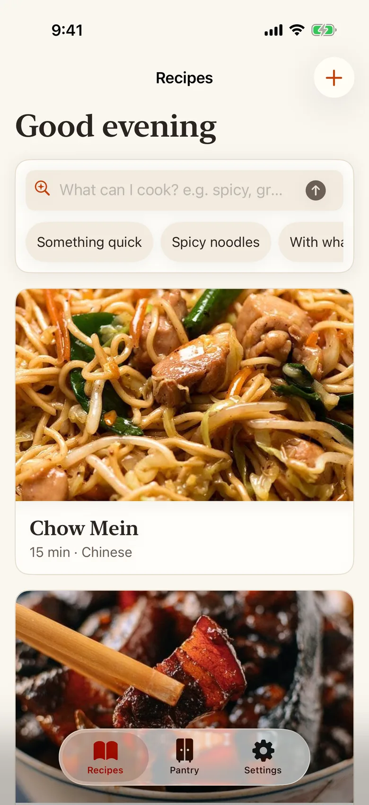

Mise
Recipes that know what's in your kitchen.
- Share a link from Safari. It flags what you're missing and suggests swaps from your pantry.
- Tell it what you changed after cooking and the recipe updates itself.
- Runs entirely on the phone with Apple's on-device models. No account, no backend.